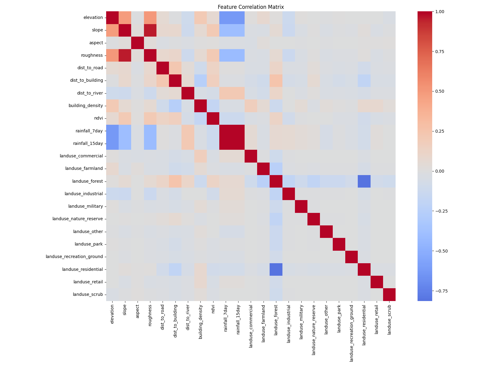
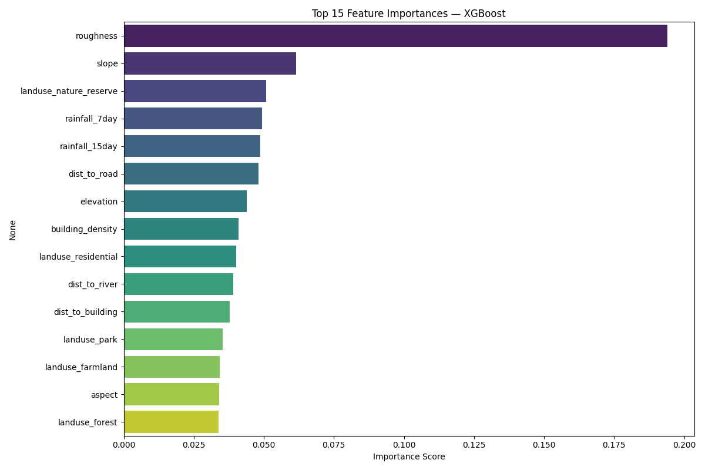
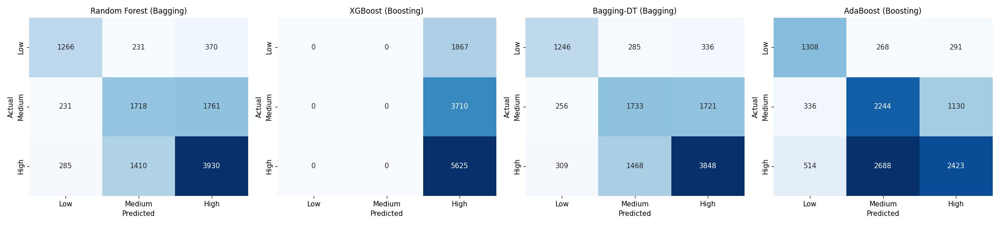
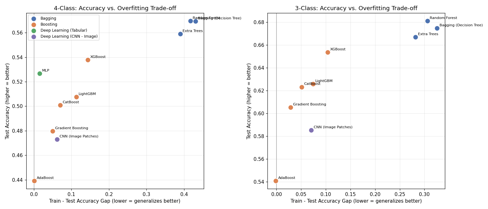
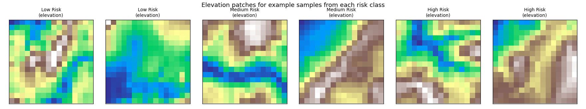

Landslide Risk Mapping
163 million pixels of Himachal Pradesh elevation data, turned into a landslide risk model, then stress-tested across 10 algorithms to find out which one actually generalizes.
Building a dataset from four different sources
There's no single "landslide risk" dataset to download. This one is assembled from a 163 million pixel digital elevation model (elevation, slope, aspect, roughness), OpenStreetMap infrastructure data (distance to the nearest road, building, and river, computed efficiently across tens of thousands of points using STRtree spatial indexing instead of brute-force comparison), satellite-derived NDVI vegetation data, and NASA POWER rainfall records.
The rainfall API alone could have meant thousands of individual requests, one per data point. Instead, nearby points get grouped into shared grid cells first, cutting that down to under 100 calls. The final table holds 56,000+ samples across 18 engineered features.
Four independent sources, merged into one 56,000+ sample table of 18 engineered features.
What the features actually look like
Before touching any model, it's worth seeing how these engineered features relate to each other and to the target. The correlation matrix below is what actually guided which features were worth keeping, and the feature importance chart shows what the eventual best model leaned on most: terrain roughness and slope dominate, well ahead of any single land-use category.


Why 3 classes beat 4
The first version of this model predicted 4 risk classes. Two of the middle classes overlapped heavily; points that were genuinely ambiguous between them confused every model equally. Collapsing those two into one and moving to a 3-class scheme improved every single model tested, not just the best one, which is what made it a real methodological finding rather than a lucky tweak to chase a leaderboard number.
The confusion matrices below show the difference directly: with 3 classes, the models' mistakes cluster far closer to the diagonal than they did with 4.
Where a bagging model gets confused
Random Forest (bagging) and XGBoost (boosting) make very different kinds of mistakes. Random Forest spreads its errors more evenly across all three classes; XGBoost, trained with a class-overlap issue on this exact 3-class run, collapsed almost entirely into predicting "High" (a known model-selection edge case that is exactly why a confusion matrix, not just an accuracy number, matters).

Ten models, three philosophies
Bagging (Random Forest, Extra Trees, Bagging-DT) trains many independent trees on random subsets of the data and averages their votes. It reduces variance and tends to generalize reasonably well almost by construction.
Boosting (XGBoost, LightGBM, CatBoost, Gradient Boosting, AdaBoost) trains trees sequentially, where each new tree focuses on correcting the previous one's mistakes. It chases accuracy aggressively, which is exactly why it can overfit if left unchecked.
Deep learning shows up twice here: an MLP on the tabular features, and a CNN trained on reconstructed spatial image patches, learning directly from the raw shape of the terrain instead of hand-engineered numbers.
The real finding: accuracy is not the whole story
Random Forest wins on raw test accuracy at 68.10%. It also has the largest gap between training and test accuracy of any model tested, a clear overfitting signal. XGBoost lands within about 3 points of Random Forest's accuracy while showing roughly a third of the generalization gap.
That trade-off, not the accuracy number by itself, is the actual headline of this project. A model that scores highest on the data it has seen isn't automatically the model you'd trust on data it hasn't.

Top-right is the sweet spot: high accuracy, small gap. Random Forest has the best accuracy; XGBoost has the better trade-off.
Building CNN training data that did not exist
A CNN needs spatial grids to learn from, image-shaped patches, not flat rows of numbers. No raw satellite imagery was available for this project, only point-based tabular features. So the elevation patches were reconstructed: for every sample, a 16×16×12 spatial patch was interpolated from nearby points using LinearNDInterpolator, then verified pixel-exact against the original tabular values at each patch's center.
The CNN trained on these reconstructed patches didn't beat the tree-based models, landing around 58.5% on the 3-class scheme, but that was never really the point. The point was proving the patches were valid inputs at all.

Six reconstructed 16x16 elevation patches, two from each risk class, built entirely from interpolated point data.